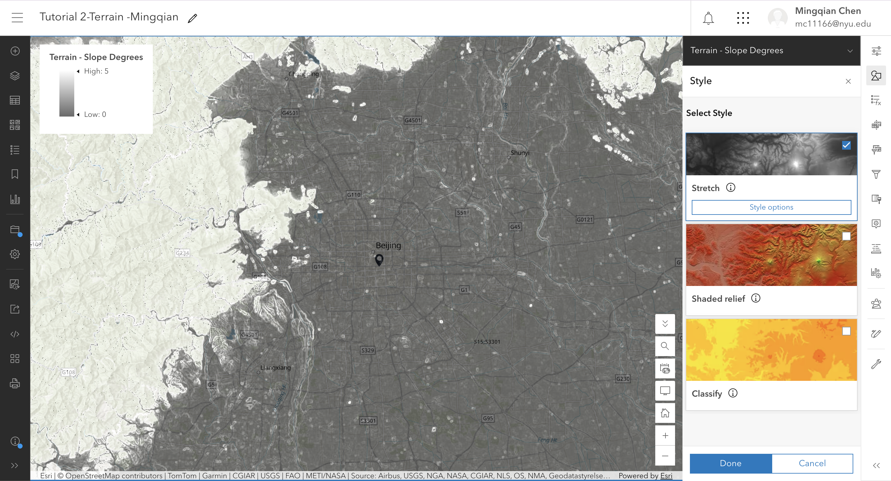
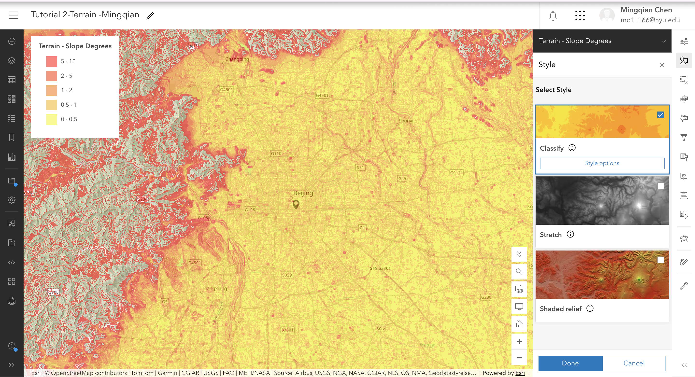
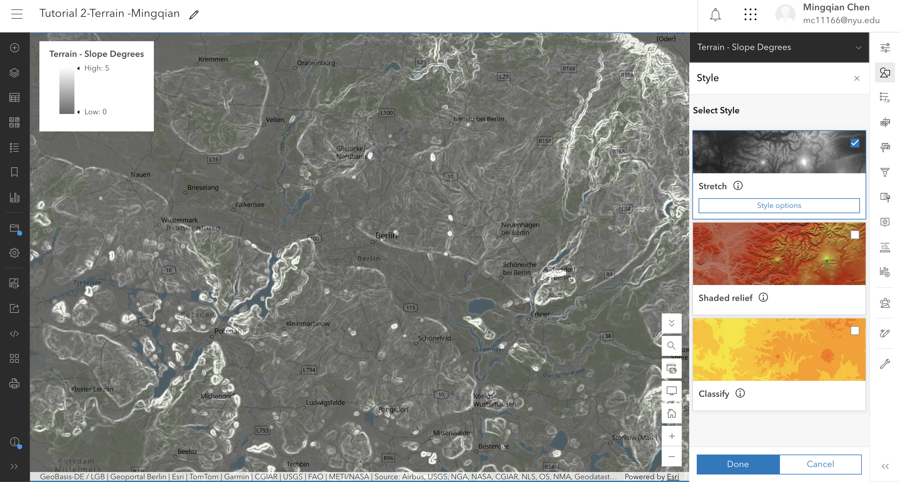
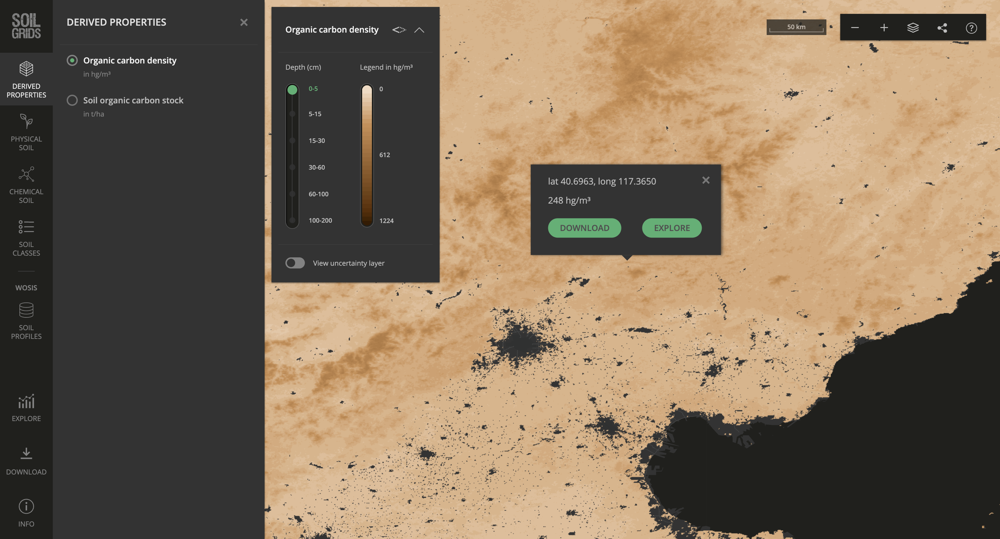
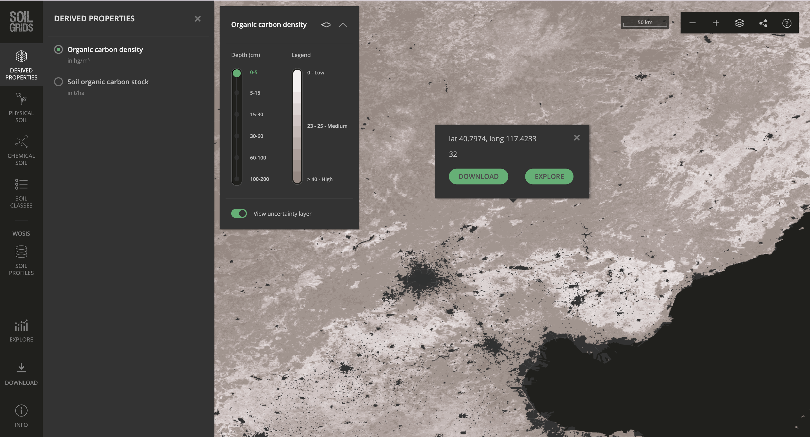

The question
What shape is my site in Haidian, Beijing, and what does that shape do to water?
The data
Terrain: Airbus_WorldDEM4Ortho_24m, pixel size 24.74 m, vertical datum EGM2008, source Airbus Defence and Space GmbH, accessed via Esri Living Atlas Terrain service. Date range 2010–14. LE90 is not stated in the coverage pop-up metadata; I record it as “vertical accuracy not stated in the layer metadata”. Licence: requires an ArcGIS Online organizational subscription, does not consume credits.
Soil: SoilGrids organic carbon density, depth 0–5 cm, predicted value at my site 32 hg/m³, source ISRIC SoilGrids (CC BY 4.0), accessed via soilgrids.org and compared with the Esri republication World Soils 250m Soil Organic Carbon.
The method
I started from my Week 2 map in ArcGIS Online and saved a copy as Tutorial 2 · Terrain · Mingqian Chen. I added the Living Atlas layers Terrain, Terrain - Slope Degrees, and Terrain - Slope Map. To find the actual source data for my site, I added the World Elevation Coverage Map and clicked on my site to page through the coverage pop-ups until I found the finest dataset: Airbus_WorldDEM4Ortho_24m with a pixel size of 24.74 m.
For the slope comparison, I used Terrain - Slope Degrees. First I set the style to Stretch → Minimum maximum with dynamic range adjustment, and took a screenshot (slope_stretch.jpg). Then I switched to Classify → Manual breaks with 5 classes and set breaks at 0, 0.5, 1, 2, 5, and 10 degrees, and took a second screenshot at the same extent (slope_classified.jpg). I also flew to Berlin at a similar zoom level to compare how a 1 m dataset resolves embankments and kerbs, while my Beijing site does not.
For soil, I opened soilgrids.org, navigated to my site, selected Organic carbon density and depth 0–5 cm, and recorded the predicted value and coordinates. I took a screenshot (soil_main.jpg), then turned on View uncertainty layer and took a second screenshot (soil_uncertainty.jpg).
The evidence





What I found
1. Expectation vs. what the map showed. I expected Beijing to be high in the northwest and low in the southeast, with water leaving roughly east or southeast. The regional slope map confirms this: the Western Hills and Yanshan are steep, while the southeast plain is flat. However, at my site scale, with a 24.74 m cell, the slope map is almost blank. It can confirm the regional tilt, but it cannot confirm that water flows east at my exact site.
2. Regional pattern. The steep ground is in the northwest (Western Hills, Yanshan), and the flat ground is the North China Plain to the southeast. Rivers such as the Yongding and Chaobai flow from northwest to southeast, building alluvial fans. This pattern is explained by tectonic uplift and fluvial deposition.
3. Site-scale movement of water and material. At my site, the ground falls slightly to the southeast. When it rains, surface water first enters street drains and the urban sewer network, eventually reaching the Tonghui River, the North Canal, and the Hai River system, and finally the Bohai Sea. Material would move with surface runoff, but most sediment is trapped by the urban drainage system.
4. Comparison: regional and data resolution. Regionally, my site is typical Beijing: high northwest, low southeast. In terms of data resolution, my site falls into the 24.74 m group, together with Shanghai, Accra, Abu Dhabi, Buenos Aires, and Tel Aviv — not the 1 m group of Berlin, London, Paris, New York, Los Angeles, or Washington DC. This difference is not geological; it is institutional. Cities with a national or municipal LiDAR survey that is published openly get the 1 m data. Where that has not happened, the service falls back to a commercial global product like Airbus WorldDEM4.
5. Limits: what this map cannot support. This map cannot support a claim that my site will not flood, nor that water will definitely flow east. At 24.74 m per cell, the grid cannot resolve kerbs, road camber, drainage inlets, embankments, or the flood wall. It is a terrain model, not a drainage model. Slope is also not stability.
What this does not show
This map cannot support a claim that my site will not flood. At 24.74 m per cell, the elevation grid cannot resolve kerbs, drainage inlets, embankments, or flood walls. It is a terrain model, not a drainage model. Slope is also not stability; material strength, water pressure, and vegetation are not in this map.
In addition, the Terrain layers require an ArcGIS Online organizational subscription. A signed-out reader may not see the live terrain layers in the embedded map. The screenshots included above are therefore the primary evidence for this entry.
AI-usage disclosure
AI-assisted for tidying the HTML and checking structure, using DeepSeek. I verified the page by opening it on a phone and a laptop. The metadata lookup, screenshots, symbology choices, map reading, and interpretation are my own.
Personal reflections have been submitted privately in Brightspace.